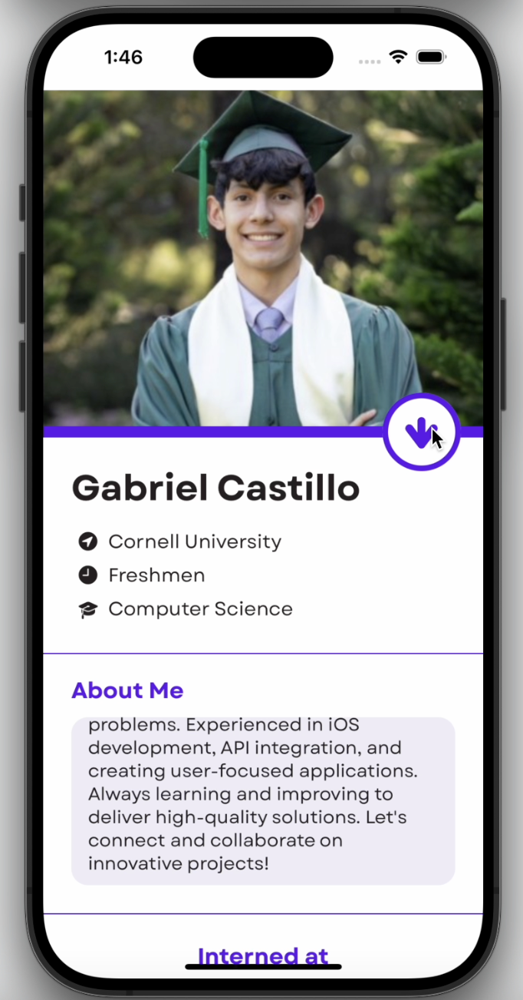
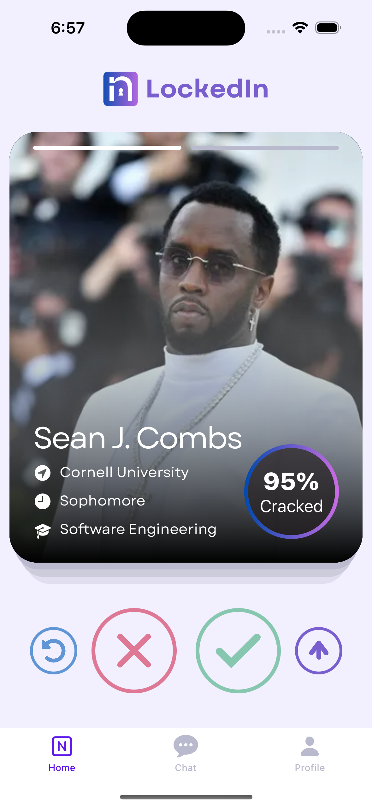

Projects!
Professional Networking App - LockedIn
 "The Tinder for LinkedIn, swipe to network!" - This Tinder-LinkedIn that makes networking addicting (and educational) was made for Cornell AppDev's Hack Challenge in Fall '24. I was the head backend developer of our 5-person team, creating the backend using Python, Flask and SQLAlchemy. We used AWS S3 for image storing, and Firebase for user authentication and messaging. This experience gave me a strong experience with relational database building, along with deploying an app, as we used Docker and Google Cloud Platform's Computer Engine to host the backend.
Intelligent Image Selection Application

Developed a **Java Swing GUI** image selection application featuring a variety of models for a class project. Implemented **Dijkstra's Algorithm** and **Priority Queues** for efficient pathfinding in the Intelligent Scissors Model. Added features like image selection, selection modification, saving, and keyboard shortcuts to enhance usability.